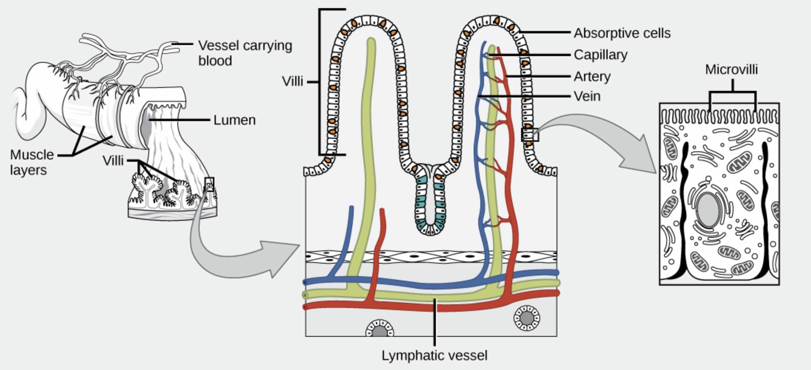

Let’s go on a journey through the digestive system of animals! From chewing crunchy leaves to digesting juicy prey, the digestive system is essential for animals to stay active and healthy. In this fun, detailed lesson, you’ll discover all the fascinating organs involved, how food is broken down, and even meet some helpful tiny microorganisms!
The digestive system is like a processing factory inside the body. When animals eat, food goes through several stages to be broken down into nutrients. These nutrients give animals the energy they need to play, run, grow, and heal. Without digestion, animals wouldn’t be able to get the fuel they need to survive!
Let’s explore the key players in this digestive adventure:
Diagram: The main organs involved in the digestive process, from mouth to anus.
Mechanical digestion is like mashing and tearing food into smaller pieces! Animals chew food in the mouth using their teeth to make it easier to swallow. In the stomach, powerful muscles churn the food around, just like a washing machine!
Chemical digestion uses special tools called enzymes and acids. These chemicals break food down into tiny molecules that the body can use. This happens mainly in the stomach and small intestine.
After food is broken down, it travels into the small intestine. Here, tiny finger-like structures called villi cover the walls of the intestine, making it easier to absorb nutrients into the bloodstream. Each villus is covered in even smaller projections called microvilli, giving the intestine a huge surface area for absorption!
Diagram: Villi and microvilli in the small intestine absorbing nutrients into the bloodstream.
Picture the villi and microvilli as millions of tiny fingers, grabbing nutrients and passing them into the bloodstream. This way, the body gets everything it needs—proteins, carbohydrates, fats, vitamins, and minerals!
Different animals have digestive systems that suit their diets and body types:
| Animal Type | Diet | Digestive Adaptation |
|---|---|---|
| Herbivores | Plants | Long intestines to break down fiber-rich plants. |
| Carnivores | Meat | Shorter intestines and strong stomach acids. |
| Omnivores | Plants and Meat | A mix of herbivore and carnivore features. |
| Birds | Seeds, insects | Use a gizzard to grind food since they have no teeth. |
| Vertebrates | Varies (plants, meat, or both) | Complex digestive systems with specialized organs like a stomach and intestines. |
| Invertebrates | Varies (leaves, small insects, or organic material) | Simpler digestive systems; some absorb nutrients directly through their body walls. |
The liver and pancreas are like the digestive system’s best friends:
Some microorganisms live inside the intestines and help break down food. They are part of the gut microbiome and are very important for keeping the digestive system healthy!
Not everything in the food can be used. The leftovers move into the large intestine where water is absorbed. What’s left turns into waste, which exits the body through the anus as feces!
Just like humans, animals can have digestive issues too. Here are some common ones:
To keep the digestive system healthy, animals (and people!) need a balanced diet, plenty of water, and exercise.
The digestive system is essential for keeping animals alive and active. Without it, animals wouldn’t be able to get the energy they need to grow, move, or heal. It’s truly a magical system!